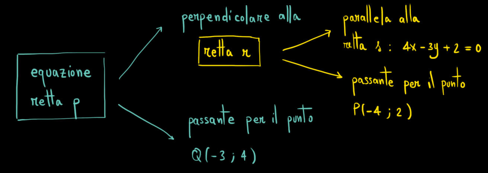

Siano \(r\) la retta passante per i punti \(A\left(\dfrac{2}{3}\,,\,\,-\dfrac{1}{2}\right)\) e
\(B\left(-\dfrac{1}{6}\,,\,\,\dfrac{5}{3}\right)\)
ed \(s\) la retta passante per i punti \(C(2,-1)\) e \(D\left(-1,\dfrac{8}{13}\right)\).
Stabilire se le rette \(r\) ed \(s\) sono perpendicolari.
Suggerimento
Per risolvere l'esercizio potete seguire questa struttura.
Le rette sono perpendicolari se vale la relazione
\[
m_r \cdot m_s = -1
\]
Quindi
Trovo il coefficiente angolare di \(r\)
Trovo il coefficiente angolare di \(s\)
Verifico se è vero che \(m_r \cdot m_s = -1\).
Soluzione
No, le due rette non sono perpedicolari tra di loro.
Esercizio
Consideriamo la retta \(r\) di equazione \(5x - y + 1 = 0\). Dopo aver verificato che i punti
\(A(1\,,\,\,6)\) e \(B(2\,,\,\,11)\) appartengono alla retta \(r\), calcolare la loro distanza.
Soluzione
Per verificare che \(A\) appartiene alla retta \(r\) controllo se le sue
coordinate soddisfano l'equazione di \(r\). Stessa cosa per il punto \(B\).
La distanza tra i due punti è \(AB = \sqrt{26}\).
Esercizio
Sia \(r\) la retta parallela alla retta \(s\) di equazione
\[
4x - 3y + 2 = 0
\]
e passante per il punto \(P(-4\,,\,\,2)\).
Scrivere l'equazione della retta \(p\) perpendicolare alla retta \(r\) e
passante per il punto \(Q(-3\,,\,\,4)\).
Suggerimento
Questo è lo schema di risoluzione dell'esercizio

Per risolvere l'esercizio potete seguire questa struttura.
Prima scriviamo l'equazione della retta \(r\).
Trovo il coefficiente angolare di \(r\)
Trovo il termine noto di \(r\)
Successivamente scriviamo l'equazione della retta \(s\).
Trovo il coefficiente angolare di \(s\)
Trovo il termine noto di \(s\)
Soluzione
L'equazione della retta \(p\) è
\[
y=-\frac{3}{4}x+\frac{7}{4}
\]